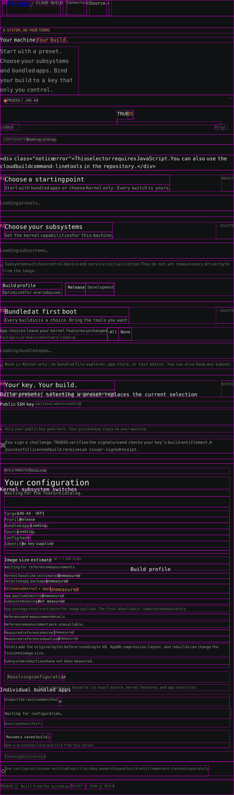
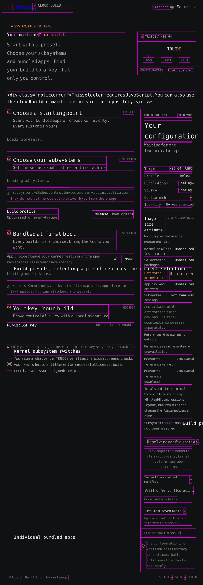

<!doctype html><meta charset="utf-8"><style>body{margin:0;background:#222;color:white;font:18px sans-serif}main{display:flex;gap:12px;padding:12px}section{width:calc(50% - 6px);overflow:hidden}h2{font-size:18px}img{width:100%;vertical-align:top}</style><main><section><h2>Before · 1280px viewport</h2></section><section><h2>After · 1280px viewport</h2></section></main>